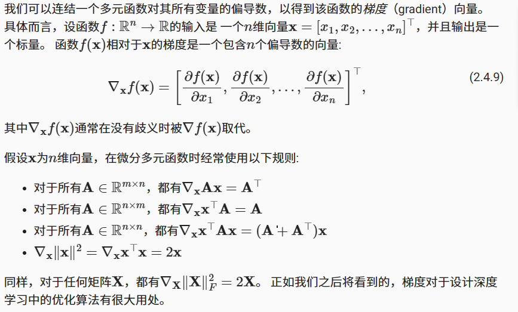
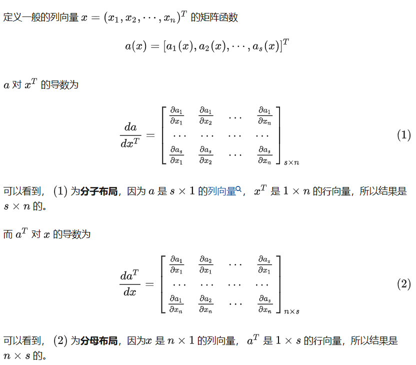
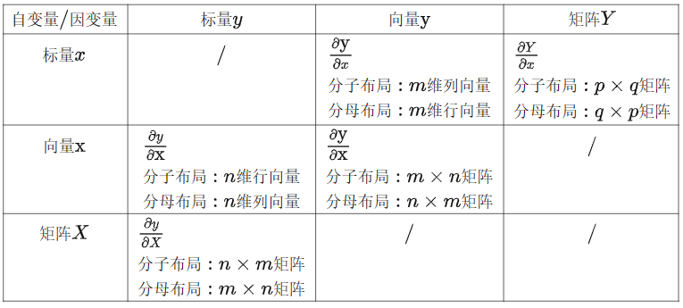
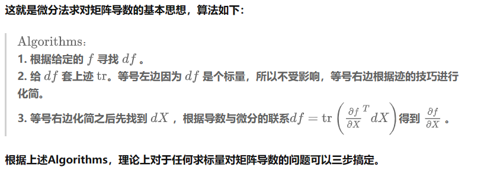
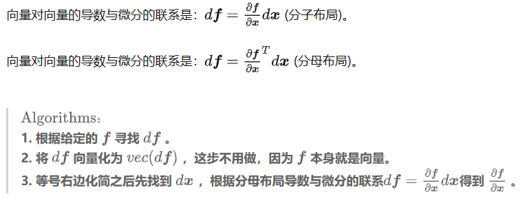
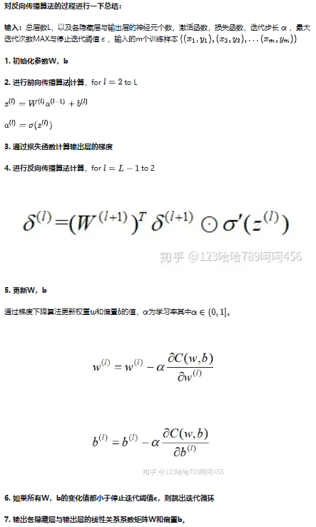
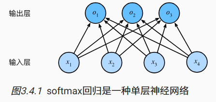

AI学习记录1
part1:数学基础
范数：
向量范数是将向量映射到标量的函数f，以下代码表示一个L2范数
1 | u = torch.tensor([3.0, -4.0]) |
梯度：
一个多元函数对其所有变量的偏导数。一个函数f(x)的输入是n维的向量，输出是一个标量。则函数f(x)相对于x的梯度是一个包含n个偏导数的向量，由于深度学习中，多元函数往往是复合的，所以一般使用链式法则来对复合函数求微分
深度学习框架可以自动计算导数：我们首先将梯度附加到想要对其计算偏导数的变量上，然后记录目标值的计算，执行它的反向传播函数，并访问得到的梯度。以下代码是一个简单的例子1
2
3
4
5
6
7
8
9
10
11
12x = torch.arange(4.0)
#创建梯度，标量函数关于向量x的梯度是向量，且具有相同形状
x.requires_grad_(True) # 等价于x=torch.arange(4.0,requires_grad=True)
y = 2 * torch.dot(x, x) #计算x和x的点积
y.backward()#4x
print(x.grad)
# 在默认情况下，PyTorch会累积梯度，我们需要清除之前的值
x.grad.zero_()
y = x.sum()
y.backward()#1
print(x.grad)
书上的梯度相关的数学的结论如下图：

矩阵求导
参考链接-知乎
通过该链接，学习到矩阵求导的基本规则如下图：
矩阵求导全解-知乎
该链接详细介绍了矩阵求导的规范：
矩阵求导布局（视为规定）
分子布局：导数的维度以分子为主
分母布局：倒数的维度以分母为主
在机器学习的算法推导里，通常遵循以下布局的规范：
- 如果向量或者矩阵对标量求导，则以分子布局为准。
- 如果标量对向量或者矩阵求导，则以分母布局为准。
- 对于向量对对向量求导，有些分歧，一般以分子布局的雅克比矩阵为主。

标量对矩阵求导
算法如下图：

矩阵对矩阵求导
算法如下图：

梯度下降算法
参考链接-知乎
$x \leftarrow x^2 - \eta\frac{df(x)}{dx}$
梯度作为一个向量，代表一个方向，朝着梯度的反方向变化可以使得函数值变小，$\eta$代表学习率
反向传播算法(Back propagation)
参考链接-知乎
反向传播仅指用于计算梯度的算法,其具体流程如下图所示，能够从最后一层的梯度算出前面层数的梯度

深度学习框架通过自动计算导数，即自动微分来加快求导。实践中，根据设计好的模型，系统会构建一个计算图，来跟踪计算是哪些数据通过哪些操作组合起来来产生输出。自动微分使得系统能够随后反向传播梯度，即意味着跟踪整个计算图，填充关于每个参数的偏导数
概率
- 联合概率(joint probability): $P(A=a,B=b)$
- 条件概率(conditional probability): $P(A=a|B=b)$
- 贝叶斯定理(multiplication rule): $P(A|B)=\frac{P(B|A)P(A)}{P(B)}$
- 边际化: $P(B) = \sum_{A} P(A,B)$，一般和贝叶斯定理结合使用
- 独立性：$P(A|B)=\frac{P(A,B)}{P(B)}=P(A)$
part2:线性神经网络
线性回归与线性模型
线性回归基于几个简单的假设：假设自变量x和因变量y之间的关系是线性的， 即y可以表示为x中元素的加权和，这里通常允许包含观测值的一些噪声； 其次，我们假设任何噪声都比较正常，如噪声遵循正态分布。
数据集称为训练数据集（training data set） 或训练集（training set）。每行数据（比如一次房屋交易相对应的数据）称为样本（sample），也可以称为数据点（data point）或数据样本（data instance）。试图预测的目标（比如预测房屋价格）称为标签（label）或目标（target）。预测所依据的自变量（面积和房龄）称为特征（feature）或协变量（covariate）。
基本的模型如下：
其中b是输入特征的仿射变换，其特点是通过加权和对特征进行线性变换。并通过偏置项进行平移（translation）。
预测模型可用点积表示：
或用矩阵向量积表示：
其中 $\boldsymbol{X}\in{\mathbb{R}^{n*d}}$ 其每一行是一个样本，一共有n个预测结果。该模型的模型参数为$\boldsymbol{w}$和$b$,为找到最佳的参数，还需要两个工具：
- 一种模型质量的度量方式
- 一种能够更新模型以提高模型预测质量的方法
损失函数
使用损失函数量化目标的实际值与预测值之间的差距，通常选择非负数作为损失，数值越小越好，完美预测时损失为0。线性回归往往用平方误差作为损失函数：
为了度量模型在整个数据集上的预测质量，需要计算在训练集n个样本上的损失均值:
训练模型的目的是找到一组参数，这组参数能最小化在所有训练样本上的总损失
解析解
参考链接-CSDN
线性回归的解可用一个公式简单的表示，将b合并到w中，最小化$||\boldsymbol{y}-\boldsymbol{X}\boldsymbol{w}||^2$，得到解析解
随机梯度下降
在无法得到解析解的情况下，我们也可以有效地训练模型。梯度下降（gradient descent）的通过不断地在损失函数递减的方向上更新参数来降低误差，但是每次更新参数都必须遍历整个数据集，为提高速度，通常在每次需要计算更新的时候随机抽取一小批样本。这种方法称为小批量随机梯度下降（minibatch stochastic gradient descent）。
每次迭代抽取一个小批量$\mathcal{B}$，其由固定数量的训练样本组成。然后计算小批量的平均损失关于模型参数的导数。最后将梯度乘以一个预先确定的参数$\eta$，并从当前参数值减掉。
算法的步骤如下：（1）初始化模型参数的值（随机初始化）（2）从数据集中随机抽取小批量样本且在负梯度的方向上更新参数，并不断迭代这一步骤。
其中$|\mathcal{B}|$表示小批量中的样本数，即批量大小，而$\eta$表示学习率。这两个都是手动预先自定的，这些可以调整但不再训练过程中更新的参数成为超参数（hyperparameter）。调参（hyperparameter tuning）是选择超参数的过程。
正态分布与平方损失
正态分布概率密度函数如下：
均方误差损失函数可以用于线性回归的一个原因是：假设观测中包含了噪声且噪声服从正态分布，即
其中，$\epsilon \sim \mathcal{N}\left(0, \sigma^{2}\right)$.
现在可以写出通过给定的x观测到特定y的似然函数：
根据极大似然估计法，参数w和b的最优值是使得整个数据集似然最大的值:
用最小化负对数进行进一步推导：
这样就使得最小化均方误差等价于对线性模型的极大似然估计了
线性回归从零开始实现
在每次迭代中，读取小批量训练，通过模型来获得一组预测。计算完损失后开始反向传播，存储每个参数的梯度。最后调用优化算法来更新模型参数。训练的轮数epoch和学习率lr都是超参数，从0开始实现线性回归的算法代码如下，具体参看书的3.2节1
2
3
4
5
6
7
8
9
10
11
12
13
14
15
16
17
18
19
20
21
22
23
24
25
26
27
28
29
30
31
32
33
34
35
36
37
38
39
40
41
42
43
44
45
46
47
48
49
50
51
52
53
54
55
56
57
58
59
60
61
62
63
64
65
66
67
68
69
70
71
72
73
74
75
76
77
78##3.2.1生成数据集
def synthetic_data(w, b, num_examples): #@save
"""生成y=Xw+b+噪声"""
X = torch.normal(0, 1, (num_examples, len(w)))
#normal生成了一个张量，包含从均值为0，标准差为1的正态分布中随机抽取的随机数，num_examples表示生成张量的行数,len(w)表示生成张量的列数
y = torch.matmul(X, w) + b
#matmul用于矩阵乘法运算
y += torch.normal(0, 0.01, y.shape) #加上高斯噪音，标准差是0.01
return X, y.reshape((-1, 1))
true_w = torch.tensor([2, -3.4])
true_b = 4.2
features, labels = synthetic_data(true_w, true_b, 1000)
#features每一行是一个二维数据样本，labels每一行包含一个标签值
print('features:', features[0],'\nlabel:', labels[0])
d2l.set_figsize()
d2l.plt.scatter(features[:, (1)].detach().numpy(), labels.detach().numpy(), 1) #绘制散点图
#d2l.plt.show()
##3.2.2读取数据集
def data_iter(batch_size, features, labels):
num_examples = len(features)
indices = list(range(num_examples))
# 这些样本是随机读取的，没有特定的顺序
random.shuffle(indices)#打乱的数据顺序
for i in range(0, num_examples, batch_size):#batch_size为每个小批量的大小
batch_indices = torch.tensor(
indices[i: min(i + batch_size, num_examples)])#取出一组batch_size的索引值
yield features[batch_indices], labels[batch_indices]
#yield将一个函数转换为生成器函数，在调用生成器函数的过程中，每次遇到yield语句时，函数会暂停并保存当前所有的运行信息（保留局部变量），返回yield的值
batch_size = 10
for X, y in data_iter(batch_size, features, labels):
print(X, '\n', y)
break
##3.2.3初始化模型参数
w = torch.normal(0, 0.01, size=(2,1), requires_grad=True)
b = torch.zeros(1, requires_grad=True)
#我们通过从均值为0、标准差为0.01的正态分布中采样随机数来初始化权重， 并将偏置初始化为0
##3.2.4定义模型
def linreg(X, w, b): #@save
"""线性回归模型"""
return torch.matmul(X, w) + b
#当我们用一个向量加一个标量时，标量会被加到向量的每个分量上
##3.2.5定义损失函数
def squared_loss(y_hat, y): #@save
"""均方损失"""
return (y_hat - y.reshape(y_hat.shape)) ** 2 / 2
##3.2.6定义优化算法
#小批量随机梯度下降更新
def sgd(params, lr, batch_size): #@save
"""小批量随机梯度下降"""
with torch.no_grad():#禁用梯度计算，所有的require_grad被自动设置为false
for param in params:
param -= lr * param.grad / batch_size #lr是学习率,用batch_size批量大小来规范化步长
param.grad.zero_()#清除梯度
##3.2.7训练
lr = 0.03 #学习率
num_epochs = 3 #训练轮数
net = linreg #线性回归模型
loss = squared_loss #损失函数
for epoch in range(num_epochs):
for X, y in data_iter(batch_size, features, labels):#data_iter遍历数据集，将训练数据集中的所有样本都使用一次（1000/10)
l = loss(net(X, w, b), y) # X和y的小批量损失
# 因为l形状是(batch_size,1)，而不是一个标量。l中的所有元素被加到一起，并以此计算关于[w,b]的梯度
l.sum().backward()#调用反向传播算法进行计算
sgd([w, b], lr, batch_size) # 使用参数的梯度更新参数
with torch.no_grad():
train_l = loss(net(features, w, b), labels)
print(f'epoch {epoch + 1}, loss {float(train_l.mean()):f}')
线性回归的简洁实现
对于标准深度学习模型，我们可以使用框架的预定义好的层。这使我们只需关注使用哪些层来构造模型，而不必关注层的实现细节。 我们首先定义一个模型变量net，它是一个Sequential类的实例。 Sequential类将多个层串联在一起。 当给定输入数据时，Sequential实例将数据传入到第一层， 然后将第一层的输出作为第二层的输入，以此类推。这样的一个层称为全连接层，因为它的每一个输入都通过矩阵-向量乘法得到它的每个输出
通过深度学习框架的高级API来实现我们的模型只需要相对较少的代码。 我们不必单独分配参数、不必定义我们的损失函数，也不必手动实现小批量随机梯度下降。 当我们需要更复杂的模型时，高级API的优势将大大增加。 当我们有了所有的基本组件，训练过程代码与我们从零开始实现时所做的非常相似。下面是对比1
2
3
4
5
6
7
8
9
10
11
12
13
14
15
16
17
18
19
20
21
22
23
24
25
26
27
28
29
30#生成数据集
true_w = torch.tensor([2, -3.4])
true_b = 4.2
features, labels = d2l.synthetic_data(true_w, true_b, 1000)
#调用框架中现有的API来读取数据，将特征和标签作为API的参数床底，通过数据迭代器指定batch_size
def load_array(data_arrays, batch_size, is_train=True):
"""构造一个PyTorch数据迭代器"""
dataset = data.TensorDataset(*data_arrays)
return data.DataLoader(dataset, batch_size, shuffle=is_train)
batch_size = 10
data_iter = load_array((features, labels), batch_size)
#定义模型，利用Sequential类直接完成
# nn是神经网络的缩写
from torch import nn
net = nn.Sequential(nn.Linear(2, 1))
#初始化模型参数
net[0].weight.data.normal_(0, 0.01)
net[0].bias.data.fill_(0)
#使用optim模块中的小批量随机梯度下降算法初始化SGD实例，指定要优化的参数（net.parameters()）以及优化算法所需的超参数字典
trainer = torch.optim.SGD(net.parameters(), lr=0.03)
#训练
num_epochs = 3
for epoch in range(num_epochs):
for X, y in data_iter:
l = loss(net(X) ,y)
trainer.zero_grad()#清零梯度
l.backward()
trainer.step()
l = loss(net(features), labels)
print(f'epoch {epoch + 1}, loss {l:f}')
1 | lr = 0.03 #学习率 |
softmax回归
回归用于预测多少的问题，分类关心“哪一个”的问题。
通过独热编码（one-hot encoding）可以进行分类数据的表示,softmax回归解决的就是数据份额里的问题。为了解决线性模型的分类问题，需要一个多个输出的模型和与输出一样多的仿射函数（affine function）。softmax回归也是一个单层的神经网络结构，如下图所示：

对于任何具有d个输入和 q个输出的全连接层，参数开销是$O(dq)$，这个开销可以减少到$O(dq/n)$，n可由我们灵活指定。
我们希望模型的输出$\hat{y}_{j}$可以视为属于类$j$的概率,所以必须保证在任何数据上的输出都是非负的且总和为1。这时候就需要使用softmax函数如下式：
$\begin{aligned} & o_1=x_1 w_{11}+x_2 w_{12}+x_3 w_{13}+x_4 w_{14}+b_1 \\ & o_2=x_1 w_{21}+x_2 w_{22}+x_3 w_{23}+x_4 w_{24}+b_2 \\ & o_3=x_1 w_{31}+x_2 w_{32}+x_3 w_{33}+x_4 w_{34}+b_3\end{aligned}$
$\hat{\mathbf{y}}=\operatorname{softmax}(\mathbf{o})$
其中：$\hat{y}_j=\frac{\exp \left(o_j\right)}{\sum_k \exp \left(o_k\right)}$
softmax运算不会改变未规范化的预测o之间的大小次序，只会确定分配给每个类别的概率，尽管它是一个非线性函数，但其回归的输出仍然由输入特征的仿射变换决定，所以其仍是一个线性模型。
接下来需要一个损失函数，同样使用上文提到过的的极大似然估计。极大似然估计的原理就是：利用已知的样本结果信息，反推最具有可能（最大概率）导致这些样本结果出现的模型参数值。
极大似然估计中的采样必须满足独立同分布。对于一些情况，样本太多，无法得出分布的参数值，可以采样小样本后，利用极大似然估计获取假设中分布的参数值。
假设整个数据集有{$\mathbf{X}$,$\mathbf{Y}$}具有n个样本，其中索引为i的样本由特征向量$\mathbf{x}^{(i)}$和独热标签向量$\mathbf{y}^{(i)}$组成。
根据极大似然估计，可以最大化$P(Y|X)$,相当于最小化负对数似然：
其中对于任何标签$y$和模型预测$\hat{y}$，损失函数为：
这种损失函数成为交叉熵损失（cross-entropy loss）,它是一个两个概率分布之间差异的很好的度量，它测量给定模型编码数据所需的比特数
对softmax的损失函数求导过程如下：
softmax回归从零开始实现
此处将$2828$像素的样本图像平展为784的向量（不利用图像空间结构的特征），由于数据集有10个类别，所以权重将构成$78410$的矩阵，偏置为$1*10$的行向量1
2
3
4
5num_inputs = 784
num_outputs = 10
W = torch.normal(0, 0.01, size=(num_inputs, num_outputs), requires_grad=True)
b = torch.zeros(num_outputs, requires_grad=True)
接下来定义softmax的操作，利用sum的keepdim参数，指定保持在原始张量的轴数（参数1表示行求和）
1 | def softmax(X): |
接下来定义softmax回归模型，利用reshape将图像展平为向量：1
2def net(X):
return softmax(torch.matmul(X.reshape((-1, W.shape[0])), W) + b)
然后定义损失函数（交叉熵）：
y_hat包含两个样本在三个类别上的预测概率，标签则是y,则使用PyTorch张量的花式索引写法，将y作为y_hat中概率的索引有：1
2
3
4
5y = torch.tensor([0, 2])
y_hat = torch.tensor([[0.1, 0.3, 0.6], [0.3, 0.2, 0.5]])
y_hat[[0, 1], y]
#[out]:tensor([0.1000, 0.5000])
实现交叉熵函数如下：1
2
3
4def cross_entropy(y_hat, y):
return - torch.log(y_hat[range(len(y_hat)), y])
cross_entropy(y_hat, y)
分类精度是正确预测数和总预测数之比，直接优化精度或许会很困难，但精度是我们最关心的性能度量标准，使用如下函数计算得到预测正确的数量：1
2
3
4
5
6
7
8def accuracy(y_hat, y): #@save
"""计算预测正确的数量"""
if len(y_hat.shape) > 1 and y_hat.shape[1] > 1:
y_hat = y_hat.argmax(axis=1)
#print(y_hat)
#print(y_hat.type(y.dtype))
cmp = y_hat.type(y.dtype) == y
return float(cmp.type(y.dtype).sum())
同样，对于任意数据迭代器data_iter可访问的数据集，我们可以评估在任意模型net的精度。Accumulator创建了两个变量用于存储正确预测数量和预测总数1
2
3
4
5
6
7
8
9
10
11
12
13
14
15
16
17
18
19
20
21
22
23class Accumulator: #@save
"""在n个变量上累加"""
def __init__(self, n):
self.data = [0.0] * n
def add(self, *args):
self.data = [a + float(b) for a, b in zip(self.data, args)]
def reset(self):
self.data = [0.0] * len(self.data)
def __getitem__(self, idx):
return self.data[idx]
def evaluate_accuracy(net, data_iter): #@save
"""计算在指定数据集上模型的精度"""
if isinstance(net, torch.nn.Module):
net.eval() # 将模型设置为评估模式
metric = Accumulator(2) # 正确预测数、预测总数
with torch.no_grad():
for X, y in data_iter:
metric.add(accuracy(net(X), y), y.numel())
return metric[0] / metric[1]
训练模型的一个迭代周期的代码逻辑如下，updater是更新模型参数的常用函数，它接受批量大小作为参数。 它可以是d2l.sgd函数，也可以是框架的内置优化函数：1
2
3
4
5
6
7
8
9
10
11
12
13
14
15
16
17
18
19
20
21
22
23def train_epoch_ch3(net, train_iter, loss, updater): #@save
"""训练模型一个迭代周期（定义见第3章）"""
# 将模型设置为训练模式
if isinstance(net, torch.nn.Module):
net.train()
# 训练损失总和、训练准确度总和、样本数
metric = Accumulator(3)
for X, y in train_iter:
# 计算梯度并更新参数
y_hat = net(X)
l = loss(y_hat, y)
if isinstance(updater, torch.optim.Optimizer):
# 使用PyTorch内置的优化器和损失函数
updater.zero_grad()
l.mean().backward()
updater.step()
else:
# 使用定制的优化器和损失函数
l.sum().backward()
updater(X.shape[0])
metric.add(float(l.sum()), accuracy(y_hat, y), y.numel())
# 返回训练损失和训练精度
return metric[0] / metric[2], metric[1] / metric[2]
可与上一节内容进行对比1
2
3
4
5
6
7
8
9num_epochs = 3
for epoch in range(num_epochs):
for X, y in data_iter:
l = loss(net(X) ,y)
trainer.zero_grad()#清零梯度
l.backward()
trainer.step()
l = loss(net(features), labels)
print(f'epoch {epoch + 1}, loss {l:f}')
训练函数如下,在train_iter访问到的训练数据集上训练一个模型net，改训练函数会运行多个迭代周期（由num_epochs指定）。每个迭代周期结束时，利用test_iter问到的测试数据集对模型进行评估：1
2
3
4
5
6
7
8
9
10
11
12
13
14
15
16
17
18
19def train_ch3(net, train_iter, test_iter, loss, num_epochs, updater): #@save
"""训练模型（定义见第3章）"""
animator = Animator(xlabel='epoch', xlim=[1, num_epochs], ylim=[0.3, 0.9],
legend=['train loss', 'train acc', 'test acc'])
for epoch in range(num_epochs):
train_metrics = train_epoch_ch3(net, train_iter, loss, updater)
test_acc = evaluate_accuracy(net, test_iter)
animator.add(epoch + 1, train_metrics + (test_acc,))
train_loss, train_acc = train_metrics
assert train_loss < 0.5, train_loss
assert train_acc <= 1 and train_acc > 0.7, train_acc
assert test_acc <= 1 and test_acc > 0.7, test_acc
#使用sgd
lr = 0.1
def updater(batch_size):
return d2l.sgd([W, b], lr, batch_size)
#正式训练
num_epochs = 10
train_ch3(net, train_iter, test_iter, cross_entropy, num_epochs, updater)
softmax回归的简洁实现
由于softmax回归的输出层是一个全连接层，所以我们只需要在Sequential中添加一个带有10个输出的全连接层即可1
2
3
4
5
6
7
8
9
10#初始化模型训练参数
# PyTorch不会隐式地调整输入的形状。因此，
# 我们在线性层前定义了展平层（flatten），来调整网络输入的形状
net = nn.Sequential(nn.Flatten(), nn.Linear(784, 10))
def init_weights(m):
if type(m) == nn.Linear:
nn.init.normal_(m.weight, std=0.01)
net.apply(init_weights)
若$o_k$中的一些数值非常大，那么$\exp(o_k)$可能大于数据类型容许的最大数字，即上溢（overflow）。解决这个问题的一个技巧是：在继续softmax计算之前，先从所有$o_k$中减去$\max(o_k)$。
在减法和规范化步骤之后，可能有些$o_j - \max(o_k)$具有较大的负值。
由于精度受限，$\exp(o_j - \max(o_k))$将有接近零的值，即下溢（underflow）。
通过将softmax和交叉熵结合在一起，可以避免反向传播过程中可能会困扰我们的数值稳定性问题。
交叉熵损失、优化算法、训练过程如下：1
2
3
4
5
6loss = nn.CrossEntropyLoss(reduction='none')#自带了softmax运算
trainer = torch.optim.SGD(net.parameters(), lr=0.1)
#trainer可以通用
num_epochs = 10
#替换了net,loss,trainer模块
d2l.train_ch3(net, train_iter, test_iter, loss, num_epochs, trainer)